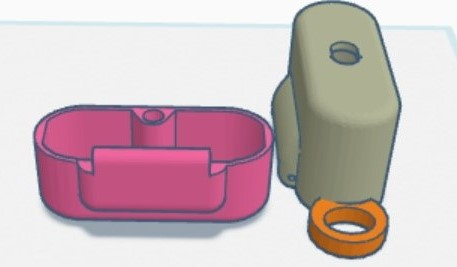
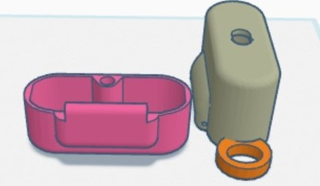
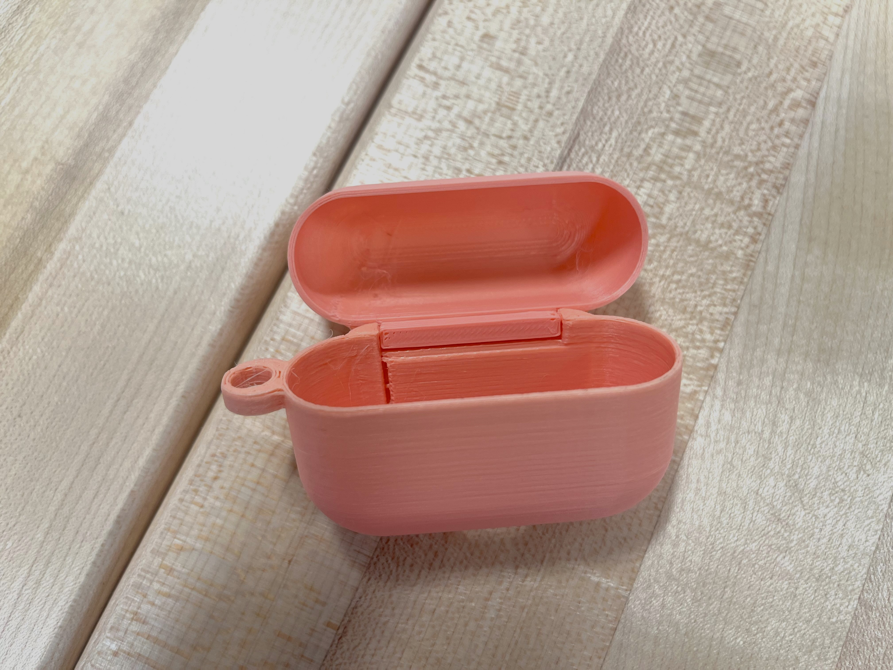
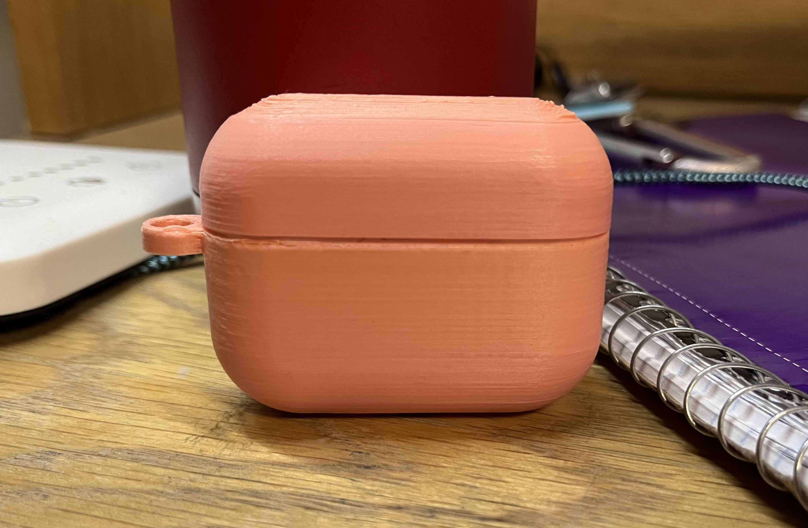
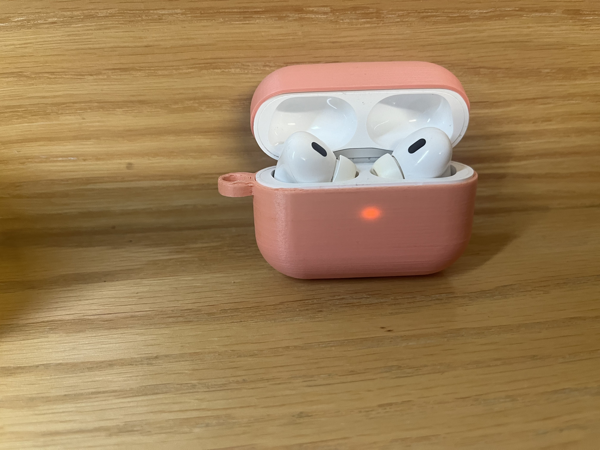
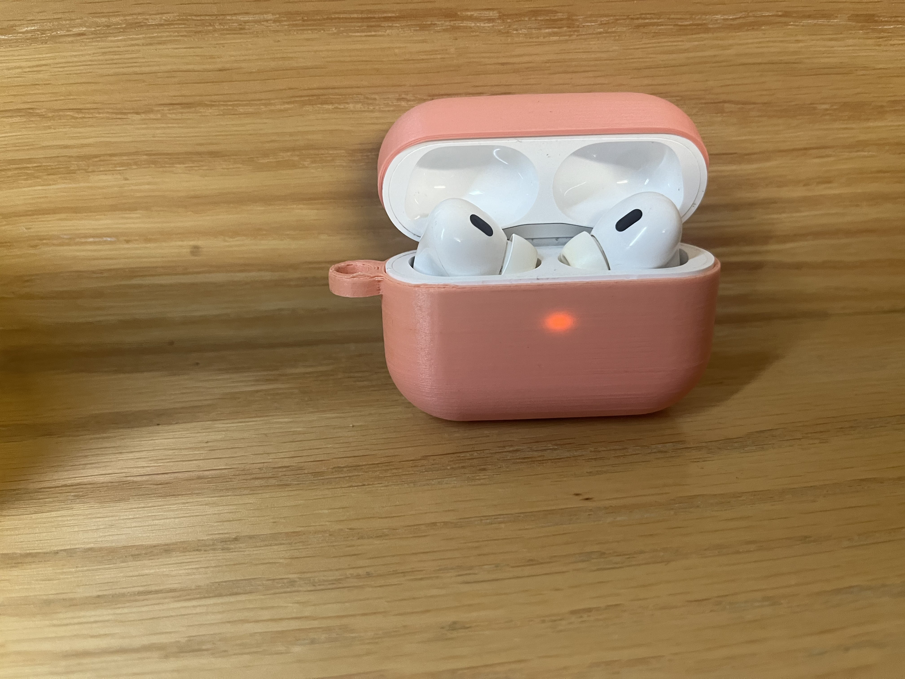

Project 2
Tinkercad and Fusion Remix
Project Description:
The goal of this project was to introduce ourselves to 3D modeling by remixing a 3D model in Tinkercad and later, Fusion.
Tinkercad remix
My Initial Sketch and Design in Tinkercad
 

My inital idea was to add a handle to an Airpod case since I don't have one and would also like to attach my Airpods to my keys, so I can worry less about losing them. I found a file for an Airpod Pro 2 case on Thingiverse and added a small handle to the base of the case by combining cylinders and using the hole tool.
Tinkercad remix in Prusaslicer

In order for the model to print correctly, I flipped the bottom piece over and added supports for the overhangs.
Final Print of Tinkercad Remix


The model had no issues during printing. I found, however, that in the original model, there was a piece in the middle of the top case that prevented my Airpods from fitting. I assumed that the original model was designed for my model of Airpods, but I should have checked and could have removed the piece in Tinkercad. I found Tinkercad relatively simple to use. However, I felt limited by the shapes the software provided, but I found making simple modifications easy and efficient. I should have checked the original model beforehand though. To better my modification, I would first make it possible for the original case to fit. I would also edit the hinge hole to make sure that I would be able to use screws to keep the hinge in place.
Fusion remix
My Initial Sketch and Original Model in Fusion


For my Fusion remix, I decided to find a more form fitting model. I also wanted to challenge myself by choosing a model that didn't have a hinge or handle, which I would add in Fusion.
Final Model in Fusion

I found Fusion a lot more difficult compared to Tinkercad, especially as someone with little to no 3D modeling experience. I began learning Fusion by following the tutorial provided by Autodesk; however, I found that I wasn't truly digesting what was being taught. I then decided to just go into Fusion and mess around. I found that simply reading what the different tools did and attempting to use them was the best way to learn. I can definitely say that my work was not as efficient as possible, but I think this experience of messing around, feeling extremely frustrated, and eventually getting a product I was happy with, was necessary if I want to become proficient at using Fusion. I am excited to continue using Fusion and developing my skills.
Fusion Model in Prusaslicer

Like the model designed in Tinkercad, I also flipped the bottom part of the case over and added supports for both pieces of the model designed in Fusion.
Final Fusion Model Print
  

The print was successful and fit my Airpod case perfectly. I went to the MakerLab to try and find something that would fit the hinge and keep the top and bottom pieces of the case from separating. I was unable to find any screws that would fit, so I ended up using a twist tie. The hinge movement is a bit rough as the original case pushes back as you open it. Additionally, the filament surrounding the hinge hole is a bit thin and viable to snap off. To better my design for future prints and use, I would give a bit more leeway for the hinge. I would also thread the hinge hole so that I could use screws to keep the top and bottom from separating. Furthermore, I would extrude the back pieces of the hinge more so that the filament surrounding the hinge hole would be thicker. I would also make the handle hole a bit larger so that I could clip it onto a wider range of things.